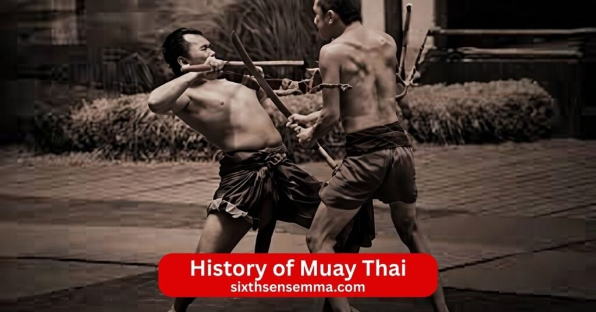
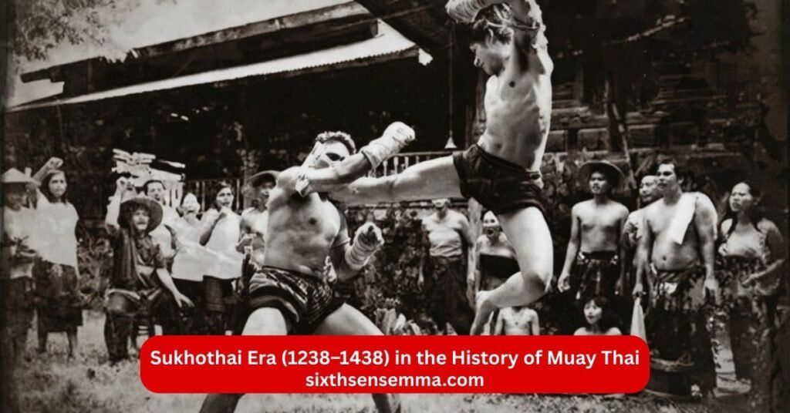
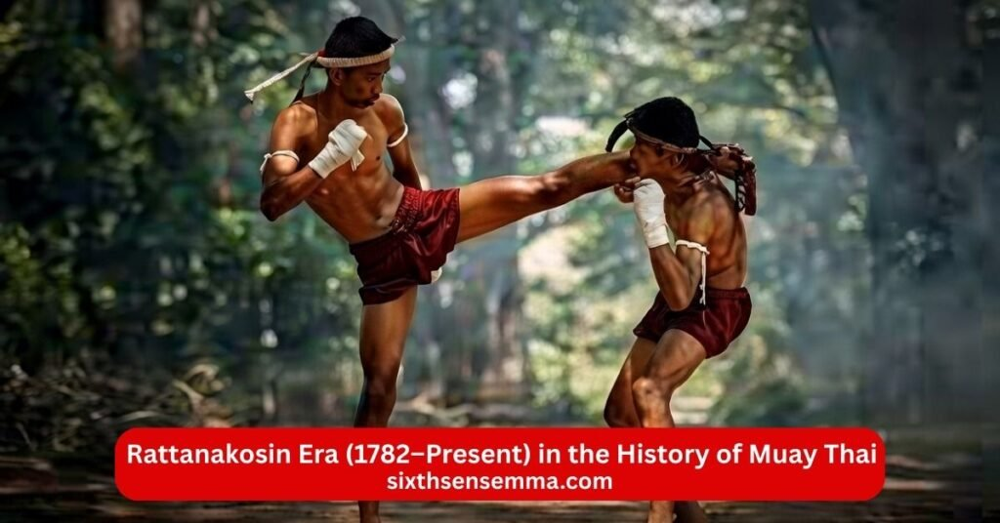

History of Muay Thai From Ancient Battle field Combat to a Global Martial Art

History of Muay Thai tells the story of a powerful martial art born in Thailand. Also known as Thai boxing this combat sport uses fists elbows knees and shins making it the art of eight limbs. Muay Thai started as a battlefield skill for Thai warriors and grew into Thailand’s national sport. Deeply ingrained in Thai culture it includes traditions like Wai Kru Ram Muay and remains part of everyday life for many Thai people. From ancient Muay Boran to modern Muay Thai the sport has evolved with boxing gloves rings and international rules while keeping its strong Thai roots. Today Muay Thai is practiced worldwide in Muay Thai gym and professional Muay Thai fights influencing Kids martial arts training and inspiring fighters everywhere.
History of Muay Thai
Muay Thai is a full contact martial art and combat sport also known as Thai boxing. It is deeply ingrained in Thai culture and serves as the national sport of Thailand. The history of Muay Thai goes back centuries and shows how Thai people turned fighting skills into an art form. Muay Thai is known as the art of eight limbs because fighters use fists elbows knees and shins. This fighting style makes Muay Thai different from western boxing and many other martial arts. Today Muay Thai has evolved into modern Muay Thai with professional Muay Thai competitions Muay Thai events and international Muay Thai around the world.
Origin of Muay Thai in the Sukhothai Kingdom
The origins of Muay Thai can be traced to the Sukhothai Kingdom which was the first Thai kingdom. Ancient Thai warriors developed early forms of the martial art during this time. Thai soldiers used these fighting techniques to protect their land. Muay Thai came from the need to survive in battle and from the traditions of Muay Thai that Thai people passed down. The first Thai army trained in these combat methods and Muay Thai continued to grow as part of Thai culture. Knowledge of Muay Thai spread among Thai fighters and became essential for defense. Muay Thai is a combat sport that started as a way for Thai warriors to fight effectively.
Muay Thai as the “Art of Eight Limbs”
Muay Thai is often called the art of eight limbs because it uses eight points of contact in fighting. Punches come from the fists kicks use the shins elbows strike with the arms and knees hit with the legs. This makes Muay Thai a complete martial art and combat sport. Thai fighters are known for their powerful Muay Thai kick and strong clinch work. Muay Thai techniques allow fighters to attack and defend from many angles. The art of Muay Thai stands out because it includes close range strikes and full body power. Muay Thai fighters have also shown this style in mixed martial arts and Muay Thai and MMA events.
Evolution from Muay Boran to Modern Muay Thai
Muay Boran is the ancient form of Muay Thai that Thai warriors practiced long ago. Muay Boran included many techniques from Muay Thai and focused on battlefield fighting. Over time the evolution of Muay Thai happened as the sport moved away from war. Muay Thai became a sport with rules and Muay Thai rules were set for safety and fairness. Boxing gloves replaced bare fists and a boxing ring was set up for matches. Modern Muay Thai developed with Muay Thai shorts Muay Thai training in Muay Thai gym and professional Muay Thai fights. Muay Thai has evolved into what people see today in boxing stadium and Muay Thai competitions. The golden era of Muay Thai brought famous Muay Thai legend fighters who made the sport popular. Muay Thai has gained fans in Thailand and around the world.
Early Development in the History of Muay Thai
The early development of Muay Thai happened when Thai people needed strong combat skills. Muay Thai training involves hard practice to build power and technique. Thai boxers trained daily to master Muay Thai techniques. Muay Thai history shows how the martial art grew stronger through constant training Muay Thai. Many Muay Thai practitioners learned from older fighters and kept the traditions of Muay Thai alive. Muay Thai continued even as times changed and became part of the Thai identity. Muay Thai is practiced widely now because of its roots in ancient Muay Thai.
Muay Thai as a Battlefield Survival System
Muay Thai started as a battlefield survival system for Thai soldiers. Thai army fighters used Muay Thai to win fights when weapons were not enough. Muay Thai was a way to survive close combat and defeat enemies. Thai warriors trained in Muay Thai to stay alive and protect their kingdom. The father of Muay Thai is sometimes linked to early heroes who perfected these skills. Muay Thai came from real war needs and helped Thai people defend their home.
Use of Fists Elbows Knees and Shins in Combat
In ancient Muay Thai fighters used fists elbows knees and shins as main weapons. Fists delivered punches elbows struck in close range knees hit the body and shins blocked or kicked hard. This made Muay Thai effective in any fight situation. Thai fighters would use these parts to win against opponents. Muay Thai kick from the shin became famous for its power. The use of these body parts shows why Muay Thai is a full contact combat sport. Muay Thai and kickboxing share some ideas but Muay Thai keeps its unique style. Wai Kru Ram Muay and Ram Muay are traditions that fighters perform before fights to show respect and focus. These aspects of Muay Thai keep the cultural martial art of Thailand strong even in modern times.

Sukhothai Era (1238–1438) in the History of Muay Thai
The Sukhothai Era marks the beginning of organized Muay Thai. This was the first Thai kingdom and Muay Thai took shape here as a practical fighting system. Thai warriors needed skills to defend their new kingdom from attacks. Muay Thai training focused on real combat effectiveness using fists elbows knees and shins. The art of Muay Thai developed during this time as Thai soldiers honed their abilities for battle. Muay Thai became essential for protection and survival.
Muay Thai as the First Thai Army’s Combat System
Muay Thai served as the combat system for the first Thai army in Sukhothai. Thai soldiers trained daily to master close range fighting. When weapons failed or battles turned hand to hand Muay Thai gave them an advantage. Thai fighters would use every part of their body to strike and defend. This full contact style made Muay Thai deadly in war. The first Thai army relied on Adult Muay Thai classes knowledge to win fights and protect the kingdom. Muay Thai continued as the core of military training because it worked in real situations.
Role of Muay Thai in Military and Royal Training
Muay Thai played a key role in both military and royal training during Sukhothai. Soldiers learned Muay Thai techniques to build strength speed and toughness. Royal guards and nobles also trained to stay ready for conflict. Muay Thai was not just for common fighters but part of leadership preparation. Thai culture valued these skills so much that training Muay Thai became a duty for many. The martial art strengthened the whole kingdom by creating capable defenders at every level.
Ayutthaya Era (1350–1767) in the History of Muay Thai
The Ayutthaya Era saw Muay Thai shift from pure war tool to something enjoyed by more people. The kingdom grew strong and peaceful times allowed Muay Thai to move beyond the battlefield. Muay Thai competitions started appearing outside military settings. Thai boxing matches drew crowds and showed the sport’s growing popularity. Muay Thai history during this period highlights how the fighting style adapted to new uses while keeping its power and traditions.
Transition from Military Technique to Popular Sport
Muay Thai slowly changed from a military technique to a popular sport in Ayutthaya. With fewer large wars the need for constant battle training decreased. People began practicing Muay Thai for fitness skill and entertainment. Thai fighters trained in Muay Thai gym like setups and showed their abilities in public. The sport of Muay Thai gained fans among common people and nobles alike. Muay Thai became a way to test courage and honor outside war. This transition kept Muay Thai alive and let it spread through Thai society.
Muay Thai Competitions at Festivals and Public Events
Muay Thai competitions took place at festivals and public events during Ayutthaya. Fighters would face off in open areas or early boxing rings. Crowds gathered to watch Muay Thai fights and cheer for skilled Thai boxers. These events often included gambling on Muay Thai which added excitement. Winners earned respect money and fame. Muay Thai events helped the martial art grow popular and allowed fighters to refine techniques against real opponents. Public matches made Muay Thai a celebrated part of Thai culture.
Legendary Figures in the History of Muay Thai
Certain fighters and kings left deep marks on Muay Thai history. These legendary figures shaped the sport through their skill passion and leadership. Their stories inspire Muay Thai practitioners today and show why Muay Thai is essential to Thai identity.
Nai Khanom Tom – The Father of Muay Thai
Nai Khanom Tom is widely regarded as the father of Muay Thai. He was a Thai boxer captured during war in the late 1700s. To win his freedom he fought and defeated many Burmese fighters in a series of matches. His skill with Muay Thai techniques impressed everyone and he used fists elbows knees and shins to win. Nai Khanom Tom proved Muay Thai’s power against strong opponents. His victory made him a hero and helped spread the art of Muay Thai. Many call him the father of Muay Thai because he showed its true strength on a big stage.
King Prachao Sua (The Tiger King) and His Passion for Muay Thai
King Prachao Sua known as the Tiger King loved Muay Thai deeply. He ruled in the Ayutthaya Era and trained in Muay Thai himself. The king often fought in disguise at local matches to test his skills against common fighters. His passion kept Muay Thai strong among royals and soldiers. King Prachao Sua promoted training Muay Thai and encouraged its practice across the kingdom. His personal involvement showed that Muay Thai was respected at the highest levels of Thai society.
King Rama V and the National Promotion of Muay Thai
King Rama V played a major role in making Muay Thai a national symbol. During his reign he supported Muay Thai as part of Thai culture. He organized Muay Thai events encouraged professional Muay Thai and helped set rules for safer matches. King Rama V worked with the sport authority of Thailand to promote Thai boxing inside and outside the country. His efforts turned Teen Muay Thai training into an official national sport. Thanks to his vision Muay Thai gained respect worldwide and stayed deeply ingrained in Thai culture.

Rattanakosin Era (1782–Present) in the History of Muay Thai
The Rattanakosin Era covers the time from the founding of Bangkok until today. This long period saw Muay Thai shift from informal fights to a regulated national sport. Kings and leaders supported Muay Thai because it represented Thai strength and identity. Muay Thai training spread more widely and the sport gained official recognition. Muay Thai competitions became organized and professional Muay Thai fighters earned respect as athletes. The cultural martial art of Thailand stayed alive through royal backing and public love.
Formalization of Muay Thai as a Regulated Sport
Muay Thai became a regulated sport during the Rattanakosin Era. Earlier fights had few rules and often used bare fists or simple wraps. As Muay Thai grew popular leaders saw the need for safety and fairness. The Sport Authority of Thailand and other groups worked to set Muay Thai rules. Weight classes time limits and judging standards came into place. Muay Thai fights moved from village grounds to proper boxing stadium. Officials supervised matches to prevent serious harm and ensure fair wins. This formalization helped Muay Thai gain respect as a real sport. It also allowed Muay Thai to spread internationally without losing its Thai essence. Many aspects of Muay Thai like scoring and bout length became standard during this time.
Development of Organized Training Centers
Organized training centers appeared and changed how people learned Muay Thai. In the past fighters trained with family teachers or in army camps. During Rattanakosin Muay Thai gym setups grew in Bangkok and other cities. These centers had dedicated spaces with heavy bags pads and rings for practice. Experienced coaches ran daily sessions focusing on Muay Thai techniques footwork and conditioning. Young Thai boxers joined these gyms to train seriously. Training Muay Thai became more structured with set schedules warm ups drills and sparring. Muay Thai practitioners improved faster because they had better equipment guidance and group energy. These gyms helped produce strong Muay Thai fighters and kept the knowledge of Muay Thai passing to new generations.
Modern Evolution in the History of Muay Thai
Modern Muay Thai took shape in the 20th century and continues today. The sport embraced new tools and ideas while holding onto old traditions. Muay Thai has evolved to meet safety needs and global audiences. Muay Thai is practiced in many countries now and influences Muay Thai and MMA scenes. Professional Muay Thai events television broadcasts and international Muay Thai organizations made it a worldwide phenomenon. Muay Thai shorts colorful designs and Wai Kru Ram Muay remain key parts even in modern settings.
Introduction of Gloves Rings and Standardized Rules
Gloves rings and standardized rules came in during modern times. Bare knuckle fights or Kard Chuek wraps caused too many injuries. Authorities introduced boxing gloves to protect hands and reduce cuts. A proper boxing ring with ropes and corners was set up for matches. This gave fighters clear boundaries and better safety. Standardized Muay Thai rules covered round length referee stops and point scoring. Judges awarded points for clean strikes effective defense and ring control. These changes made Muay Thai safer and more professional. Muay Thai became easier to watch and judge fairly. Thai fighters adapted quickly and the sport looked more like international boxing and Muay Thai while keeping its unique power.
Replacement of Kard Chuek with Modern Protective Gear
Kard Chuek the old hand wraps made from rope or cloth got replaced with modern protective gear. Kard Chuek allowed hard strikes but often led to broken hands or severe cuts. Modern Muay Thai added padded gloves shin guards mouthguards and groin protection. These items cut down on injuries without taking away the full contact nature. Fighters still use elbows knees and shins but with better safety. Shin conditioning stayed important but gear helped prevent fractures. Muay Thai training now includes gear drills so students learn to fight protected. This replacement showed how Muay Thai balanced tradition with care for fighters health. Muay Thai continued to thrive because it became safer for everyone from beginners to Muay Thai legend pros.
Global Expansion of Muay Thai
Muay Thai expanded globally when Thailand opened up more after wars and trade grew. Thai boxers went abroad to fight and teach. Muay Thai gym opened in other countries and people started training Muay Thai seriously. Muay Thai competitions happened outside Thailand and drew international crowds. The fighting style attracted fighters from different backgrounds who wanted to learn Muay Thai techniques. Muay Thai continued to grow because it proved effective and exciting to watch.
Establishment of Rajadamnern Stadium and Lumpinee Stadium
Rajadamnern Stadium and Lumpinee Stadium became the heart of professional Muay Thai. Rajadamnern opened first in 1941 and Lumpinee followed in 1956. These boxing stadium hosted the biggest Muay Thai fights and set high standards for the sport. Fighters dreamed of performing there because winning at these venues meant true respect. Muay Thai rules got stricter in these stadiums and matches turned into major events with large audiences. Thai fighters are known for shining in these rings and many Muay Thai legend fighters built their names here. The stadiums helped make Muay Thai a professional career and pushed the sport to higher levels.
International Popularity After World War II
After World War II Muay Thai gained huge international popularity. American soldiers stationed in Thailand saw Muay Thai fights and brought stories home. Some trained with Thai boxers and shared the art when they returned. Muay Thai came to the United States Europe and other places through these early contacts. Muay Thai events started in foreign countries and Thai fighters toured abroad. Muay Thai and kickboxing styles mixed in some places but pure Muay Thai stood out for its power. Gambling on Muay Thai happened less abroad but the excitement stayed the same. Muay Thai has gained fans because it offers real skill and intense action that people everywhere enjoy.
International Recognition in the History of Muay Thai
Muay Thai earned official recognition on the world stage in the late 20th century. Groups formed to organize the sport globally and set common standards. Muay Thai is now seen as a legitimate martial art and combat sport by international bodies. This recognition helped Muay Thai grow in schools clubs and competitions outside Thailand. Muay Thai practitioners from many nations now compete under fair rules.
Formation of the International Federation of Muaythai Associations (IFMA)
The International Federation of Muaythai Associations known as IFMA formed in 1993. This group brought national Muay Thai organizations together to promote the sport worldwide. IFMA created unified Muay Thai rules for amateur events and organized international Muay Thai competitions. It worked to make Muay Thai safe fair and open to all countries. IFMA helped Muay Thai enter multi sport games and pushed for more recognition. Thanks to IFMA Muay Thai training and Muay Thai fights happen under consistent guidelines everywhere.
Recognition of Muay Thai by the International Olympic Committee
The International Olympic Committee gave Muay Thai important recognition over time. IFMA gained provisional recognition from the IOC in 2016 and full recognition later. This step showed Muay Thai as an official Olympic sport candidate. Muay Thai events now appear in Asian Games and other major competitions. The IOC recognition means Muay Thai follows high standards for doping testing judging and athlete safety. It opens doors for young Muay Thai fighters to dream of Olympic medals. Muay Thai is essential to many countries now and the IOC support proves its global value.
Cultural Importance in the History of Muay Thai
Muay Thai holds deep cultural importance in Thailand. It is part of the Thai way of life and connects past and present. Traditions of Muay Thai stay strong even in modern professional settings. Muay Thai is more than sport it carries values like respect discipline and honor.
Traditional Rituals and Ceremonies in Muay Thai
Traditional rituals and ceremonies remain central to Muay Thai. Fighters perform Wai Kru Ram Muay before every match to pay respect to teachers parents and ancestors. The Ram Muay dance shows personal style and focus. Fighters wear Mongkol on their heads and Prajioud on their arms as sacred items. These ceremonies start with music from traditional Thai instruments. The rituals remind everyone that Muay Thai is a cultural martial art of Thailand not just fighting. Even in international Muay Thai events Thai fighters keep these traditions to honor their heritage.
Muay Thai as a Symbol of Thai Heritage and Identity
Muay Thai stands as a symbol of Thai heritage and identity. It represents Thai strength courage and spirit through history. Thai people see Muay Thai as part of who they are from ancient warriors to modern champions. Muay Thai day celebrations and national pride events highlight its role. Muay Thai fighters carry Thai values like humility and perseverance. The sport shows Thai culture to the world while keeping deep ties at home. Muay Thai is deeply ingrained in Thai culture and helps Thai people feel connected to their past no matter where they train or fight.
Contact US
If you want to start Muay Thai training ask about class schedules book a trial session or just come by to see the gym and talk to the coaches we are ready to help.You can call us anytime or send an email. We answer quickly and explain everything clearly whether you are new to Muay Thai need info on timings want to know about beginner classes or have any other question.
- 817 S MacArthur Blvd #100 Coppell TX 75019 United States
- (469) 972 7800
- info@sixthsensemma.com
Conclusion
The history of Muay Thai shows how a simple fighting method from ancient battlefields turned into one of the world’s most respected martial arts. From the Sukhothai Era when Thai warriors used it for survival to the modern days of packed stadiums and Olympic recognition Muay Thai has always stood for strength discipline and Thai pride. Through kings legendary fighters like Nai Khanom Tom and the hard work of countless Thai boxers this combat sport kept evolving while holding tight to its traditions like Wai Kru Ram Muay and the art of eight limbs.
Follow Us on Social Media
Stay connected with Sixth Sense MMA through our social media channels. Follow us for class updates, training tips, and a closer look at our self defense community.
FAQ’s
Muay Thai comes from Thailand and started centuries ago as a fighting system for Thai warriors. It began in the Sukhothai Kingdom around the 13th century when Thai soldiers needed close combat skills to survive battles. Over time it grew into a sport during the Ayutthaya Kingdom with public fights at festivals. In the Rattanakosin Era Muay Thai became more organized with stadiums like Rajadamnern and Lumpinee. Gloves rings and rules were added in the 20th century to make it safer. Today Muay Thai is Thailand’s national sport and has spread worldwide.
Muay Thai is not a religion but it has strong ties to Buddhism because Thailand is mostly Buddhist. Fighters perform the Wai Kru Ram Muay dance before matches to show respect to teachers ancestors and spirits. This ritual comes from Thai Buddhist and animist traditions. Many fighters pray or make offerings at temples for protection and strength. The spiritual side helps build focus discipline and humility but Muay Thai itself is a martial art and sport not a form of Buddhism.
Yes Muay Thai is very useful in a real fight. It teaches powerful strikes with fists elbows knees and shins plus clinch work to control an opponent up close. You learn to hit hard keep distance and defend against punches kicks and grabs. The full body conditioning builds toughness and the training includes realistic drills. Many fighters use Muay Thai in street situations or MMA because it works standing up and handles chaos well.
Yes Muay Thai is older than kickboxing. Muay Thai traces back to ancient Thailand over 500 years ago from battlefield fighting. Kickboxing as a sport started in the 1950s and 1960s in Japan and the United States. It mixed Muay Thai kicks with western boxing punches to create a rules based ring sport. Muay Thai came first and influenced kickboxing heavily.
Muay Thai has some weaknesses in certain situations. It focuses mostly on stand up fighting so it has less ground work like grappling or submissions. Against a strong wrestler or jiu jitsu expert a pure Muay Thai fighter can struggle if the fight goes to the ground. It also lacks some long range weapons like high spinning kicks found in other arts. The heavy focus on power can leave fighters open to fast counters if they overcommit.
MMA is stronger overall because it combines many martial arts including Muay Thai striking plus wrestling jiu jitsu and more. Muay Thai is excellent for stand up but MMA adds ground fighting submissions and takedown defense. In a ruleset that allows everything MMA usually wins because it covers more areas of combat. Pure Muay Thai is very strong in its own range but MMA is more complete.
Yes a kickboxer can beat a Muay Thai fighter depending on the rules and fighters involved. Kickboxing often bans clinch knees and elbows so a kickboxer might use faster footwork and longer punches to stay out of range. A Muay Thai fighter excels in clinch and close power strikes. In Muay Thai rules the Thai fighter usually has the advantage. In kickboxing rules the kickboxer often does better.
Nai Khanom Tom is known as the father of Muay Thai. He was a Thai fighter in the 18th century who was captured by the Burmese army. To win his freedom he fought and defeated several Burmese champions in a row using Muay Thai skills. His victories showed the power of Thai fighting techniques and made him a legend. Many people honor him as the father for proving Muay Thai’s strength.
Muay Thai is one of the toughest sports but not everyone agrees it is the absolute toughest. The training is brutal with hard conditioning sparring and repeated strikes that build pain tolerance. Fighters take a lot of damage to legs shins and body. Other sports like MMA boxing or wrestling are also extremely tough in different ways. Muay Thai ranks very high for physical and mental demands.
No single martial art is the most powerful in every situation. It depends on the fighter rules and context. Muay Thai is very powerful for striking. Brazilian Jiu Jitsu dominates on the ground. Wrestling controls takedowns. MMA combines them all and often proves strongest in mixed rules. Real power comes from the person training hard and using skills wisely not just the style.
Boxing is usually faster in hand speed and footwork. Boxers train for quick punches rapid combos and head movement. Muay Thai is powerful but slower because it uses heavier kicks knees and clinch which take more setup. Muay Thai fighters can be fast but boxing often has the edge in pure hand speed and evasion.
Yes Muay Thai has rules against certain kicks. You cannot kick to the groin back of the head or spine. Kicks to a downed opponent are illegal. Joint stomps or kicks to the knee from certain angles can be fouls. Groin kicks are strictly banned and cause point deductions or disqualification. These rules protect fighters and keep matches fair.
Train with us in Coppell
The first class is free. Shorts, a t-shirt and a water bottle. We lend the rest.
Book a free class